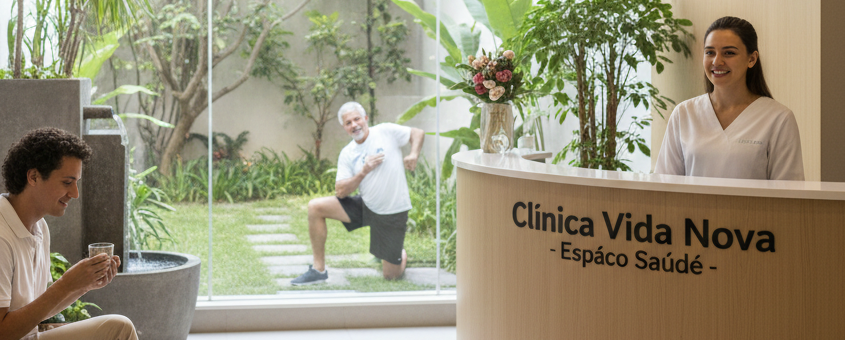

Pesquisas Avançadas
Na Clínica Vida Nova, unimos ciência e inovação para desenvolver protocolos de tratamento de ponta. Nosso foco é a medicina preventiva e diagnósticos de alta precisão, garantindo segurança e resultados modernos para sua saúde
Na Clínica Vida Nova, unimos ciência e inovação para desenvolver protocolos de tratamento de ponta. Nosso foco é a medicina preventiva e diagnósticos de alta precisão, garantindo segurança e resultados modernos para sua saúde

O Espaço Saúde une nutrição, psicologia e educação física para um cuidado integral. Nossa equipe multidisciplinar foca no equilíbrio entre corpo e mente, criando planos personalizados para sua longevidade.
A Tecnologia na Saúde é nossa grande aliada para tratamentos mais eficientes. Utilizamos sistemas de monitoramento digital e equipamentos de última geração para oferecer diagnósticos rápidos e precisos. Inovação tecnológica na Clínica Vida Nova significa mais segurança e conforto para você.